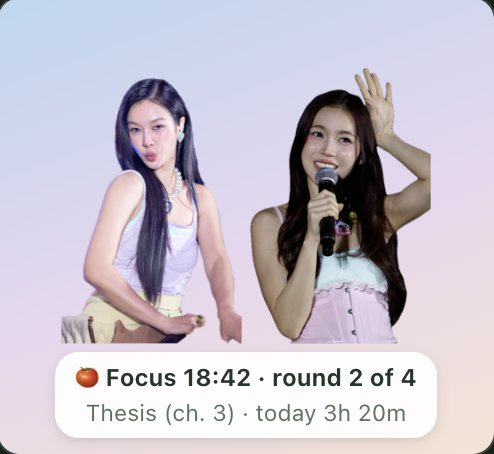

ML WorkHelp
ML WorkHelpA MilkLove buddy for your work day
A work clock or the Pomodoro, a focus screen, reminders and events, and your week, month and year in numbers, with Milk and Love keeping you company on your screen.


How it works
A day with ML WorkHelp
From the morning's first task to the end of the day: here's what it does, in the order you'll meet it.
Start your day, your way
Pick how you keep time at the top of Today, and switch with one tap; nothing is lost, and you can undo.
- Work clock: counts while you're at the computer, task by task, and notices when you step away.
- Pomodoro: focus rounds with breaks between; every round counts as today's work.
- Set a focus of the day, and fix any part of today's timeline later.

A focus screen for work away from the keyboard
Reading, studying on paper, drawing? The clock fills the screen, and sitting still isn't counted as away.
- Your colours (mint & pink, or five more), where it sits, its size and opacity.
- One sticker walking the edges, the photographers' photos, or nothing behind it.

Reminders & events, just typed
Type “Stretch in 25 min” or “Fan meeting Sat 14:00–17:00” and the time is picked for you.
- Works on its own, or in step both ways with Apple Reminders and Apple Calendar.
- When it's time: a chime, or Milk and Love calling each other; the buddy holds it up for you.

Milk & Love, on your desktop
The desktop buddy walks along your screen, naps when you're away, and shows your clock underneath.
- Gentle break reminders, and a MilkLove video (GMMTV OFFICIAL) on your break.
- A Thai word now and then, with how to say it.
- Choose who, which stickers, how big, and how often they change.

Your week, month and year
Three tabs, the same period:
- Summary: the numbers with their trend, goal days, and each day by category (work, breaks or both).
- Analysis: where the time went, when you work, your typical day, focus quality, side by side with before.
- Calendar: click any day to see and change it. Make a picture of it, or export a CSV.

Add photos you're allowed to use; the people are cut out for you. Say who took each one, change it any time.
Click Muv at the bottom left: answers, a short tour of each part, and a way to write to us.
English, Traditional Chinese, and Thai (beta), everywhere in the app.
Two apps
ML WorkHelp or DevHelp?
Two separate apps for two kinds of day. Each works on its own; you can use either one, or both.
ML WorkHelp
A desktop app for Mac (Windows coming).
- Work clock and Pomodoro, the focus screen
- Reminders & events, with Apple Reminders and Calendar
- Data: summary, analysis and an editable calendar
- Milk & Love on your desktop, your own stickers
Recommended for planning your days, the full calendar, and seeing how you work over weeks and months.
DevHelp
An extension for VS Code and Kiro.
- A tiny panel with a GMMTV mascot in a scene, and a Thai word
- A dev buddy walking round your editor, and a desktop buddy
- Work clock, Pomodoro, break and work reminders
- A few Milk & Love stickers and animals
For lightweight use while you code. No calendar sync or data dashboards: for those, use ML WorkHelp.
| ML WorkHelp | DevHelp | |
|---|---|---|
| Where | Its own app on your desktop | Inside VS Code and Kiro |
| Buddies | Milk & Love on your desktop | GMMTV mascots round your editor, a desktop buddy |
| Keeping time | Work clock, Pomodoro, focus screen | Work clock and Pomodoro |
| Reminders | Reminders and events, Apple sync | Simple reminders and break nudges |
| Calendar & data | Summary, analysis, editable calendar | Not included |
| Thai words | With reminders and breaks | A word card in the panel |
They don't share data and don't need each other. If you use both, each keeps its own time.
DevHelp · VS Code & Kiro
DevHelp: a light buddy while you code
A GMMTV mascot walks round the edges of your editor, a tiny panel shows a scene and a Thai word, and the status bar keeps your Pomodoro. A desktop buddy can count your work time and remind you to rest. That's it: small on purpose.


Mac and Windows, English or 繁體中文. The mascots belong to GMMTV; our drawings follow the official art.
Download ML WorkHelp
On a Mac, the first time you open it macOS may say it can't check the developer: right-click the app, choose Open, then Open again.
Photos and permission
We've been given permission to use photos in the app by Blumoon, Lyrac, NGMin and otter, and the cartoon drawings by wanwannjeab. For the other photos we tried to reach the photographers but haven't heard back. We've done our best to tag and identify who took every photo; if a photo is yours and you'd like it credited or taken down, please tell us any time. We'll make the change in the next update and let our users know.
In the app, click any sticker to see its original photo and who took it. Thank you to:
- GMMTV @GMMTV
- Blumoon @blumoonfoto
- NGMin @ngmin
- otter @Miiiichstabe
- Lyrac @loveminiheartph
- Sflove0523 @sflove0523
- KIU @kiu_628ML
- MilkPansaFamily @milkfamily__
- wanwannjeab @wanwannjeab (cartoon Muv drawings)
- Milk Pansa Vosbein @panlyyy
- Love Pattranite Limpatiyakorn @loverrukk
New versions & important notices
We write when there's a new version, when DevHelp is out, or when there's something you need to know (for example, a rights holder asking for a photo or sticker to be removed). That's all.
Versions
The app looks for a new version once a day by reading a small file on this page; nothing about you is sent. You can switch it off in Settings › About & updates.
Privacy
Your work log, reminders, photos and settings stay on your computer. There's no account, no tracking, and your work isn't sent anywhere. Apple Reminders and Calendar are only read and written on your own Mac.
The one thing that leaves your computer is the email you give when you first open the app: it goes to our mailing list (Buttondown), only so we can tell you about new versions and things you need to know. It's never shared, sold or used for anything else.
คำแปลภาษาไทยอาจยังไม่ถูกต้องทั้งหมด หากคุณอยากช่วยปรับปรุงคำแปล ติดต่อเราได้ที่ alitasdepollos01@gmail.com หรือ X @alitasdepollos0 ขอบคุณค่ะ